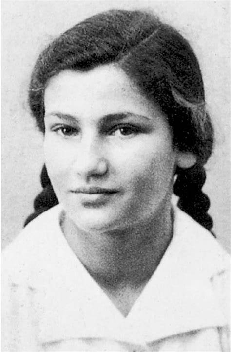
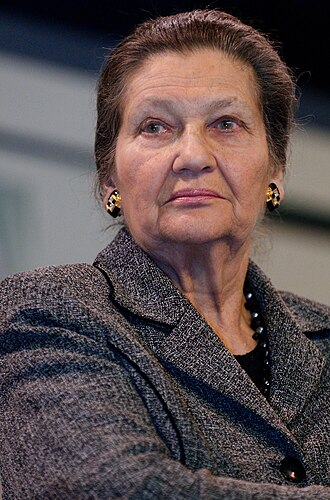

Simone Annie Jacob (Simone Veil) est née le 13 juillet 1927 à Nice dans une famille juive aux origines lorraines. La famille de Simone est explicitement juive, mais non pratiquante et « très laïque » : « Mon appartenance à la communauté juive ne m'a jamais fait problème.
Du fait de la crise de 1929, la famille Jacob est contrainte de quitter son appartement, pour un autre plus petit. Lorsque la crise s'aggrave, les commandes aux architectes comme son père se raréfient, et sa mère tricote pour les enfants de familles démunies.
En 1937, Simone entre en sixième au lycée de jeunes filles (lycée Albert-Calmette), où elle fait ses études secondaires jusqu'au baccalauréat (en 1944)Le 17 juin 1940, les enfants Jacob sont envoyés vers Toulouse, où ils séjournent quelque temps chez leur oncle. Ils rentrent ensuite à Nice.
Simone Jacob poursuit sa scolarité au lycée de jeunes filles, tout en participant au mouvement scout au sein de la Fédération française des éclaireuses (FFE), dans laquelle toute sa famille s'investit aussi. Simone considère les scouts comme une deuxième famille.
Lorsque l'armistice est signé le 22 juin 1940 par le gouvernement Pétain, la France est soumise à une occupation partielle : Nice se retrouve dans la zone non occupée. André Jacob (le père) est accablé, mais il ne pense pas que les Juifs aient quoi que ce soit à craindre.
Le 4 octobre, le gouvernement de Pierre Laval met en place le premier statut des Juifs qui instaure à leur encontre des mesures d'interdiction professionnelle et l'obligation de se déclarer, de se faire « recenser ». André Jacob effectue les démarches obligatoires — ce à quoi Simone déclarera plus tard s’être alors opposée — ; il perd le droit d'exercer sa profession d'architecte. Yvonne Jacob passe ses journées à chercher de la nourriture pour sa famille.
